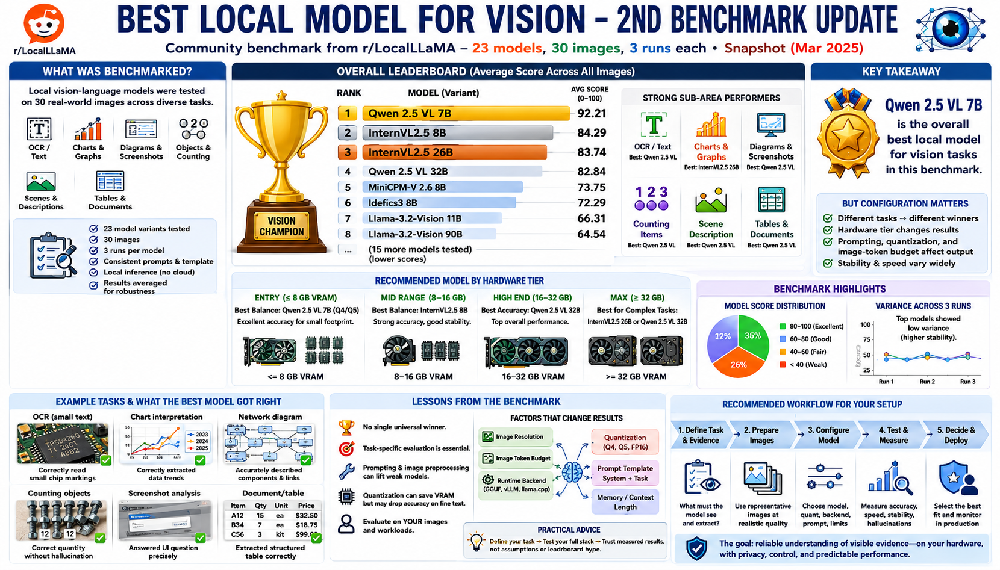

Hardware Constraints and Model Size
Connecting to LMS... Progress: in progress

Narration
Model weights, visual components, context buffers, image tokens, and runtime overhead all consume memory. Available VRAM or unified memory often determines which model and quantization can run without heavy offloading. System RAM still matters when weights or caches spill beyond accelerator memory.
NVIDIA GPUs have broad local-inference support across many runtimes. AMD support depends more on operating system, backend, and model format. Apple Silicon uses unified memory shared by CPU and GPU, which can make larger models practical but also means the operating system and applications compete for the same pool.
CPU inference is widely available but may be too slow for larger models or frequent images. A GPU or accelerator improves throughput when the runtime supports it correctly. Measure actual utilization; unsupported operations can fall back to the CPU and change performance.
Hardware tiers such as 4 to 8 gigabytes, 12 to 16 gigabytes, and 24 gigabytes or more are useful planning categories, not permanent model recommendations. Smaller tiers favor compact models and lower quantization. Larger tiers support more capacity, but still need headroom.
Larger models can improve some tasks while increasing latency, power, and failure risk under memory pressure. Concurrency and image size can matter more than a single prompt benchmark.
Shortlist configurations that fit comfortably, then test speed, memory, temperature, power, and completion under representative load. The right size is the smallest configuration that meets quality and reliability needs with operational headroom.